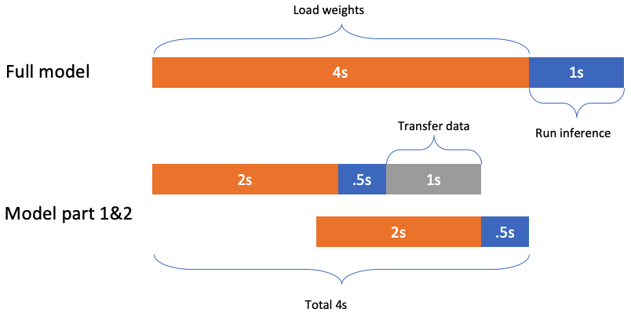
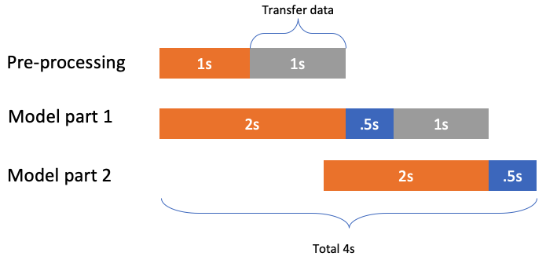
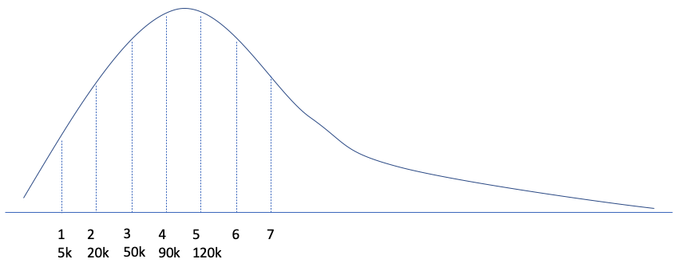

Key point
Focus on the request burst and smooth transition to noraml state.
Base fact
During lmabda cold startup:
- Model load time dominates other time.
- ONNX model can be splited into several parts, these parts can be loaded parallelly, which can reduce the latency(Countributions 1).
- The lambda startup time is charged, so during the onnx model loaded time, we can use as little as possible lambda to preprocess the input, which can reduce the cost(Countributions 2).
- For the request burst slide window, how to decide
- how to split the ONNX model
- the number of preprocess lambda
- the number of ONNX runtime lambda
- how to close the useless lambda gradual after the burst.
Reduce latency
We can split the ONNX model to several parts and load them parallelly to reduce the latency.
Reduce cost
After above step, there are still some latency to load the first ONNX mode part, for example, in above picture, the Function 2’s load time(2s). In this time, we can use another lambda to do the preprocssing work.
In the Pre-processing, besides the transfer data time, it has 1s to do the preprocessing. Because the lambda lanuch time still is charged, so if we can do as much as possible work for each lambda in its 1s runtime, we can reduce the cost then.
Slide window
For example, as above picutre, sudeenly, there comes lots of request. In first second, there are 5k requests, and then at the second second, there are 15k request, 20k for the first two seconds, etc.
Based on previous experiments, the appropriate RPS for each lambda is 300. Assume the lambda launch time is 4s, so at the fourth second, we need 300 lambda to handle these 90k requests. However, at fifth second, there are only remaining 30k, we only need 100 lambda then.
So how to decide the number of lambda to server slide window is a point to work.
Workflow
if the inner size is larger than 262,144 bytes, then store it to s3 and pass the inference only, otherwise can pass it to the next lambda directly.
600 = 20*30 = 300*2, we use one preprocess lambda and two onnxruntime lambda. We set the RPS as 600, which means there will comes 600 requests per second, and we use only one preprocess lambda to handle it. Each time lambda pulls 20 requests, so its throughput is 30/s. Then we use two onnxruntime lambda, each one hanldes 300 requests per second, so its throughput is 300/s. In ideal case, one process labmda can serve 20*300 = 6000 requests and needs 300 onnx runtime lambda.
Component:
- SQS, accepts requests from APIGATE.
- preprocess lambda, each time it pulls 20 requests from SQS, and processes it then store it into s3 (pull requests from SQS).
- for each result, call onnxruntime lambda to handle (one-call-many).
- how to create more lambda?: first, check the size of SQS, create new preprocess labmda per 6000 requests, and new onnxruntime lambda per 300 requests.
- 120,000 SQS
lambda
Concurrency is the number of requests that your function is serving at any given time. When your function is invoked, Lambda allocates an instance of it to process the event. When the function code finishes running, it can handle another request. If the function is invoked again while a request is still being processed, another instance is allocated, which increases the function’s concurrency.
However, initialization is billed even if the instance never processes a request. Provisioned concurrency runs continually and is billed separately from initialization and invocation costs.
Application Auto Scaling creates two alarms in CloudWatch. The first alarm triggers when the utilization of provisioned concurrency consistently exceeds 70 percent. When this happens, Application Auto Scaling allocates more provisioned concurrency to reduce utilization. The second alarm triggers when utilization is consistently less than 63 percent (90 percent of the 70 percent target). When this happens, Application Auto Scaling reduces the alias’s provisioned concurrency.
contribution
- 对于可以fit进一个lambda的model，提供了一种降低30%latency的方案
- 对于无法fit进一个lambda的model，提供了一种不降低latency的拆分方案
- model的拆分方案